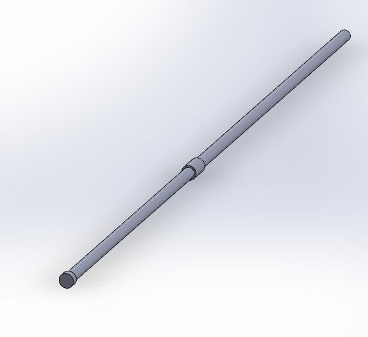
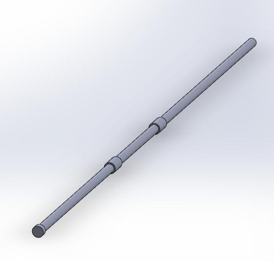
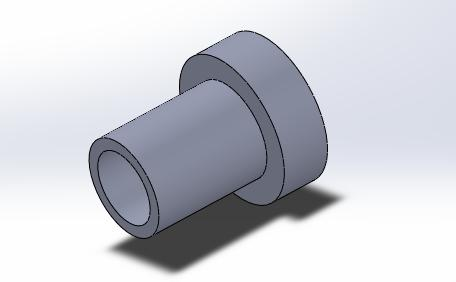

設計與繪圖 <<
Previous Next >> 參數設計與繪圖
零組件尺寸分析
1.球桌
我們是參考火球國際公開賽桌球場的規格做基準，基本上對尺寸做了一點微調。
增加為了讓回球機構能運作的平面，且球門前的球員行程並沒有想像中的寬，故在角落處增加圓弧面。

2.球員
外型依照老師提供的造型作為使用，我們將孔洞放大便於組合與安裝。

3.球桿
參考火球國際公開賽桌將球桿分為一、二、三、五人，桿上突起部位為安裝球員處。
單人、雙人桿在末端都向外延伸了一個10mm的圓柱，用來限制球員的行程和防止球桿從孔洞掉落。

三人、五人桿因為安裝球員處的圓柱能達到限制形成的效果，所以並沒有向外延伸圓柱。


4.圓盤
這是剛開始使用的回球機構的圓盤。


因為球會卡在球道末端而修改了錐形孔的圓心位置和圓盤大小及厚度。


5.握把
依照火球國際公開賽桌的握把去抓尺寸而繪製的樣子，但我們並沒有繪製銷孔和銷，只是單純利用塑膠可壓縮性而配合上去的。

6.球道
剛開始設計出來的球道模型。

球道的入口處因球道入口處太小，有機會進不了入口或彈出，因為入口處地板是平面所以球有機會停在此處。

出口處平面部分過長，球有機會停置於此處。

修改後的整體圖

修改後的入口處地板採用斜面、且入口增大，解決了入口卡球的問題。

出口修改為斜面到底，且增加圓弧面更容易讓球滾入圓盤。

7.套筒
為了讓球桿方便安裝，原本的孔洞與球桿設定為直徑15mm，但桿上的球員安裝處為直徑20mm，故將球桌的孔洞從15mm改為20mm，使球桿穿過孔洞之後安裝套筒就能使球桿固定於孔上也不會有安裝不便的問題。

設計與繪圖 <<
Previous Next >> 參數設計與繪圖